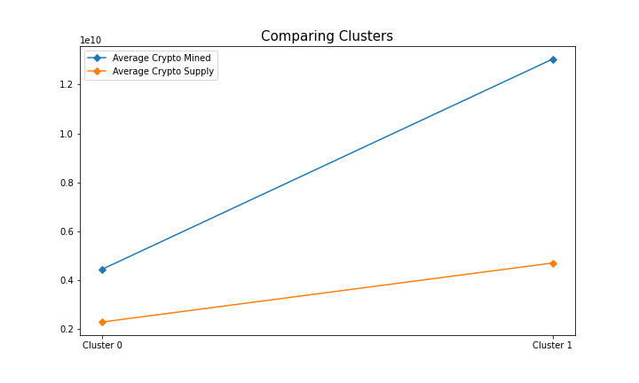

Cryptocurrencies
Cryptocurrency, sometimes called crypto, is any form of currency that exists digitally and uses cryptography, the mathematical and computational practice of encoding and decoding data, to secure transactions. For example, Bitcoin and Ethereum use a form of the elliptic-curve cryptography (ECC) to encrypt data. It is based on the algebraic structure of elliptic curves over finite fields. Below is a general form of the elliptic-curve equation:
$$ ay^2 + by = cx^3 + dx^2 + ex + f \\ $$ $$ \{a, b, c, d, e, f\} \in \mathbb{R} $$
Cryptocurrencies lack a central issuing or regulating authority and use a decentralized system to record transactions and issue new units. These currencies run on a distributed public ledger called blockchains, a record of all transactions updated and held by currency holders. Additionally, units of cryptocurrency are created through a process called mining. Mining involves using computers to solve complicated mathematical problems to generate coins. Users can also buy the currencies from brokers and store them using cryptographic wallets.
We are tasked to create an analysis for clients preparing to enter the cryptocurrency market. Since there is no known output, we will be using unsupervised machine learning to help create a report that includes what cryptocurrencies are on the trading market and how they could be grouped to create a classification system for new investments. We decided on a clustering algorithm to group the cryptocurrencies and used data visualizations to share our findings.
Resources
- Analysis Software: Python 3.10, Jupyter Notebook 6.4.12
- Data Source: CryptoCompare - crypto_data.csv
Data Process
The Data
CryptoCompare is a global cryptocurrency market data provider, giving institutional and retail investors access to real-time market
and pricing data on 5,300+ coins. This data is aggregated from numerous cryptocurrency trading platforms (CTPs) around the world. Our raw dataset includes
6 different variables associated with 1,252 cryptocurrencies. The data selection, processing, and transformation of Python code can be viewed in
the crypto_clustering.ipynb file.
Additionally, we preprocessed the data for Principal Component Analysis (PCA) by keeping all cryptocurrencies that are being traded and having a working algorithm. We also kept the rows where coins are being mined.
In order to utilize PCA, we have to quantify the columns Algorithm and ProofType and convert them into dummy variables.
Python Code:
X = pd.get_dummies(crypto_df, columns=["Algorithm","ProofType"])
Within the ProofType column, there were multiple variables that can be classified as the same. To calculate accurate results, we combined similar types
together and simplified the data. For example: "Proof of Stake" can be categorized into "PoS", etc.
Terminology
The cryptocurrency algorithm or hashing algorithm is a mechanism that encrypts virtual currency or digital currency. The hashing algorithm is a mathematical algorithm that maps data of arbitrary size to a hash of a fixed size. Some algorithms can be used in multiple cryptocurrencies because the number of cryptocurrencies today exceeds the number of existing algorithms. Miners decrypt these algorithms to generate a new block in the blockchain.
The proof type in cryptocurrency is separated into two main categories: Proof-of-Stake (PoS) and Proof-of-Work (PoW). Proof-of-Stake (PoS) is when cryptocurrency owners validate block transactions based on the number of staked coins. Proof-of-Work (PoW) is a decentralized consensus mechanism that requires members of a network to expend effort solving an arbitrary mathematical puzzle to prevent anybody from gaming the system. Proof of work is used widely in cryptocurrency mining, for validating transactions and mining new tokens.
Machine Learning Algorithms (Deeper Analysis)
For this analysis, we will be using Principal Component Analysis and K-Means Clustering to understand how the Algorithm,
ProofType, TotalCoinsMined, and TotalCoinSupply differ between cryptocurrencies.
Principal Component Analysis (PCA)
Principal Component Analysis (PCA) is one of the most used unsupervised machine learning algorithms across a variety of applications: exploratory data analysis, dimensionality reduction, information compression, and data de-noising. PCA is a dimensionality reduction technique that transforms a set of features in a dataset into a smaller number of features called principal components while at the same time trying to retain as much information in the original dataset as possible. PCA can take 4 or more variables and make a two-dimensional PCA plot. PCA can also tell us which variable is the most valuable for clustering the data. It also can tell us how accurate the two-dimensional graph is.
Principal Component Analysis calculates the average of each variable and using this average, finds the center of the data. It then shifts the data so that the center of the data is at the origin. From here, we input principal components. The principal components are vectors, but they are not chosen at random. The first principal component (PC1) is computed so that it explains the greatest amount of variance in the original features. Thus, it minimizes the distance between each data point on the graph (Sum of Squared) so PC1 is a linear combination of variables.
In order to maximize variance, the first weight vector $w_{(1)}$ thus has to satisfy:
$$ \begin{aligned} w_{(1)} &= \text{arg } \displaystyle{\max_{||w|| = 1}} \left( \sum_{i} {(t_1)}^2_{(i)} \right) \\ &= \text{arg } \displaystyle{\max_{||w|| = 1}} \left( \sum_{i} {(x_{(i)} * w)}^2 \right) \end{aligned} $$Since $w_{(1)}$ has been defined to be a unit vector, it equivalently also satisfies:
$$ w_{(1)} = \text{arg max} \left( \frac{w^TX^TXw}{w^Tw} \right) $$The quantity to be maximized can be recognized as a Rayleigh quotient. A standard result for a positive semidefinite matrix such as $X^TX$ is that the quotient's maximum possible value is the largest eigenvalue of the matrix, which occurs when $w$ is the corresponding eigenvector.
In our analysis, we require more than one component. The $k^{th}$ component can be found by subtracting the first $k − 1$ principal components from $X$ and then finding the weight vector which extracts the maximum variance from this new data matrix:
$$ \hat X_k = X - \sum_{s=1}^{k-1}{Xw_{(s)}w_{(s)}^T} $$ $$ \begin{aligned} w_{(k)} &= \text{arg } \displaystyle{\max_{||w|| = 1}} \left( ||\hat X_{k}w||^2 \right) \\ &= \text{arg max} \left( \frac{w^T\hat X_k^T\hat X_kw}{w^Tw} \right) \end{aligned} $$The sum of squared distances for the best fit line is the eigenvalue for PC1. The second component (PC2) is orthogonal to the first, and it explains the greatest amount of variance left after the first principal component. Then we find PC3 which is perpendicular to PC1 and PC2. The number of PCs is either the number of variables or the number of samples, whichever is smaller.
Python Code:
X_scaled = StandardScaler().fit_transform(X)
pca = PCA(n_components=3)
X_pca = pca.fit_transform(X_scaled)columns=["PC 1","PC 2","PC 3"],index=X.index)
Output:

Clustering Cryptocurrencies Using K-Means
K-means cluster identifies initial clusters and calculates the variances between each cluster or the Euclidean distance. It clusters all the remaining points, calculates the mean of each cluster, and then reclusters based on the new means. It repeats until the clusters no longer change. It restarts the cluster until it finds the best overall cluster. It does as much reclustering as we tell it to do. It then comes back and returns to the optimal one. First, we need to determine the best K value. An easy method for determining the best number for K is the elbow curve. To create an elbow curve, we'll plot the clusters on the x-axis and the values of a selected objective function on the y-axis. The intra-cluster distance is one of the most common objective functions to use when creating an elbow curve. The intra-cluster distance objective function is measuring the amount of variation in the dataset. For our elbow curve, we will plot the number of clusters (also known as the values of K) on the x-axis and the total intra-cluster distance values on the y-axis.
Python Code:
inertia = []
k = list(range(1, 11))
for i in k:
km = KMeans(n_clusters=i, random_state=0)
km.fit(pcs_df)
inertia.append(km.inertia_)
fig = plt.figure(figsize=(10, 6))
plt.plot(k, inertia)
Using the "elbow" or "knee of a curve" as a cutoff point is a common heuristic in mathematical optimization to choose a point where diminishing returns are no longer worth the additional cost. In clustering, this means one should choose several clusters so that adding another cluster doesn't result in a better model. The intuition is that increasing the number of clusters will naturally improve the fit (explain more of the variation) since there are more parameters (more clusters) to use, but at some point this is over-fitting, and the elbow reflects this. We can see that the total intra-cluster distance is large for k = 1 and decreases as we increase k, until k = 4, after which it tapers off and gets only marginally smaller. The slope becomes constant after k = 4. This indicates that k = 4 is a good choice. Therefore, will now cluster the states into four clusters using K-means.
Tradable Cryptocurrencies By Predictions
First, we used the PCA data to predict the clusters. Then we added a new column, Class to hold our predictions. In other words, we determined that
there were 532 tradable cryptocurrencies, and each is now separated by class.
Visualizations
2D PCA Scatter Plot
Applying the K-means to the Principal Component Analysis projection data produces an additional categorical constraint to validate the clustering algorithm. In other words, we can use dimensionality reduction as a feature extractor and reveal the different clusters. Based on the 2D PCA plot with the clustering, we cannot tell if it is consistent with the clustering of 4 sections. Since we reduced the dimensions to 4 dimensions, we need to create higher dimensional plots. Therefore, we generated a 3D PCA plot to visualize the data.
However, we do see that there are two cryptocurrency outliers: TurtleCoin and BitTorrent. TurtleCoin has a high Total Coin Supply and BitTorrent has both a high Total Coin Supply and Total Coins Mined. In order to get a better understanding of the clustering algorithm, we will remove these later.

3D PCA Scatter Plot
Based on the 3D PCA plot with the clustering, we have a clear visualization of the clusters.
Python Code:
# Import libraries
from mpl_toolkits import mplot3d
import numpy as np
import matplotlib.pyplot as plt
# Creating dataset
z = clustered_df["PC 3"]
y = clustered_df["PC 1"]
x = clustered_df["PC 2"]
cmap = plt.get_cmap("tab10")
# Creating figure
fig = plt.figure(figsize = (10, 10))
ax = plt.axes(projection ="3d")
# Add x, y gridlines
ax.grid(visible = True, color ='grey',
linestyle ='-.', linewidth = 0.3,
alpha = 0.2)
# Creating plot
sctt = ax.scatter3D(x, y, z, alpha = 0.6, c = predictions, cmap=cmap, s = 100)
3D PCA Scatter Plot (No Outliers)
Previously, the two-dimensional and three-dimensional plots included two class outliers. By running the analysis again, we determined that the removal of the class outliers, TurtleCoin and BitTorrent, does not significantly impact the clusters. Therefore, to visualize it better, we removed these outliers and generated the 3D model once more.
Results
The visualizations illustrate that there is a clear separation between the clusters generated by the machine learning algorithm. Now we will compare the different clusters: mainly cluster 0 and cluster 1 since these are the largest clusters. From the plot below, we can see the variation across the variables for each of the clusters found by the K-means algorithm. We can identify that the cryptocurrencies in cluster 0 on average have fewer total coins mined and supplied than in cluster 1.
There was also a pattern in the proof type of the currencies. Cluster 1 contained only Proof-of-Work (PoW) while cluster 0 included cryptocurrencies that required both Proof-of-Work and Proof-of-Stake (PoW/PoS). Additionally, the currencies that required only Proof-of-Stake (PoS) were categorized in cluster 0.
| Proof Type | Cluster 0 | Cluster 1 |
|---|---|---|
| PoW/PoS | 182 | 0 |
| PoS | 100 | 0 |
| PoW | 0 | 241 |
This analysis is the basis for a recommendation algorithm for those interested in the cryptocurrency market. We can create a portfolio and give recommendations based on similar cryptocurrencies one is interested in. For example: if you are buying Bitcoin and Ethereum, we can recommend similar coins from cluster 1. In contrast, we can also create a diversified portfolio from the different clusters to diminish the risk factor in the cryptocurrency market. This will be beneficial since there are high risks of trading cryptocurrencies because of volatility.
Cryptocurrency Symbol Within Each Cluster
Python Code:
df = clustered_df['Symbol'].values
cluster1 = df[model.labels_==i].tolist()
Where i is the index of the number of clusters.
| Clusters | Cryptocurrency |
|---|---|
| 0 | '42', '404', '1337', 'DASH', 'BTS', 'BTCD', 'XPY', 'KOBO', 'AUR', 'BLU', 'ENRG', 'BTB', 'CBX', 'CSC', 'DMD', 'EXCL', 'FLT', 'HBN', 'HYP', 'IOC', 'MAX', 'MINT', 'MZC', 'NAUT', 'NAV', 'OPAL', 'ORB', 'POT', 'PXC', 'RDD', 'SUPER', 'SYNC', 'TES', 'TIT', 'TOR', 'USDE', 'UTC', 'VRC', 'XC', 'XCR', 'XST', 'ZCC', 'BURST', 'SJCX', 'NTRN', 'FAIR', 'RBY', 'KORE', 'NOTE', '8BIT', 'STV', 'U', 'VTR', 'ISL', 'NXS', 'DRZ', 'SQL', 'DIGS', 'CON', 'EMC', 'EGC', 'DCR', 'EDRC', 'HTC', 'DBIC', 'PWR', 'BLRY', 'GPU', 'ERC', 'ZEIT', 'SWING', 'SAFEX', 'NEBU', 'XRA', 'REV', 'CKC', 'VIP', 'BSD', 'LIR', 'PUT', 'IBANK', 'FRWC', 'MUDRA', 'LC', 'GB', 'CTC', 'BXT', 'MST', 'ZNE', 'ROOT', 'BTCR', 'BUZZ', 'XPO', 'PSB', 'HALLO', 'CFC', 'ROYAL', 'GNJ', 'TEAM', 'LANA', 'ARK', 'INSANE', 'EMB', 'XEN', 'FRE', 'PLNC', 'ARCO', 'XCRE', 'ENT', 'EUC', 'BCF', 'XSN', 'BCCOIN', 'MONEY', 'XNG', 'RC', 'PND', 'UNITS', 'GAKH', 'ASAFE2', 'LTCR', 'KED', 'IOP', 'KUSH', 'PRX', 'IMPCH', 'ZBC', 'FRST', 'FIND', 'CHAT', 'RNS', 'XVP', 'TAJ', 'IMX', 'ATMOS', 'HPC', 'MCRN', 'RAIN', 'IMS', 'ARGUS', 'LMC', 'PROC', 'XGR', 'GRW', 'PHR', 'DEA', 'HTML5', 'USC', 'QTUM', 'ESP', 'DNR', 'VUC', 'BTPL', 'BRIT', 'LINDA', 'ONION', 'SIGT', 'CRM', 'XMCC', 'DFT', 'STCN', 'XCXT', 'ETHD', 'ODN', 'ADA', 'REC', 'TZC', 'TER', 'RUP', 'WOMEN', 'MAY', 'NAMO', 'LUX', 'XIOS', 'BTDX', 'KEK', 'BLHC', 'XIN', 'MAG', 'TAU', 'ECA', 'BCD', 'CNBC', 'BWK', 'KLKS', 'GER', 'LTCU', 'PNX', 'WAGE', 'TROLL', 'LCP', 'MONK', 'TPAY', 'MCT', 'MBC', 'USX', 'TOKC', 'SPD', 'PUSHI', 'ELP', 'VLX', 'ONT', 'BSX', 'BRIA', 'IC', 'MEDIC', 'BITG', 'DEV', 'ABJ', 'SEM', 'CARE', 'NZL', 'PROTON', 'DEAL', 'XBI', 'HWC', 'SIC', 'XT3', 'VIG', 'EMAR', 'DKD', 'POSQ', 'BWS', 'MUSE', 'TRVC', 'DTEM', 'GIC', 'PNY', 'ABS', 'VITAE', 'TPC', 'ARE', 'EUNO', 'MMO', 'KETAN', 'XDNA', 'PAXEX', 'TSC', 'KCASH', 'AAC', 'BTXC', 'BITM', 'JMC', 'HERB', 'PIRATE', 'OWC', 'GALI', 'CSPN', 'CREDIT', 'DASHP', 'NSD', 'BEET', 'TTN', 'AWR', 'INSN', 'ALX', 'LDOGE', 'TRK', 'OC', 'BITS', 'NEOS', 'HYPER', 'PINK', 'ADC', 'NKA', 'PIGGY', 'GEN', 'MI', 'CPC', 'CLUB', 'RADS', 'CRB', 'OK', 'LSK', 'XHI', 'XWC', 'FSC', 'TRI', 'EOS', 'OXY', 'TCH', 'WAVES', 'PART', 'NXT', 'ZEPH', 'GAP', 'XBC' |
| 1 | 'BTC', 'ETH', 'LTC', 'XMR', 'ETC', 'ZEC', 'DGB', 'PRC', 'SPR', 'ARG', 'XMY', 'MOON', 'ZET', 'SXC', 'QTL', 'QRK', 'RIC', 'DGC', 'CAT', 'CCN', 'CRYPT', 'XVG', 'DVC', 'EAC', 'EFL', 'EMC2', 'EMD', 'FRK', 'FTC', 'GDC', 'GLC', 'GLD', 'IFC', 'IXC', 'KGC', 'LKY', 'LTB', 'MEC', 'MED', 'MINC', 'NOBL', 'NMC', 'NYAN', 'RPC', 'SBC', 'SMC', 'SYS', 'TGC', 'TRC', 'UNB', 'UNO', 'URO', 'VIA', 'VTC', 'WDC', 'XJO', 'BCN', 'XDN', 'MONA', 'NLG', 'PTC', 'WBB', 'FLO', 'ABY', 'FLDC', 'UIS', 'CYP', 'OMC', 'GRE', 'XCN', 'MSC', 'SOON', '1CR', 'MARS', 'CTO', 'ACP', 'BSC', 'SONG', 'ZNY', 'EXP', 'SC', 'MND', 'I0C', 'RVR', 'HODL', 'GAME', 'DIEM', 'ADZ', 'SOIL', 'YOC', 'SIB', 'FRN', 'BOLI', 'OMNI', 'PIZZA', 'KMD', 'KRB', 'ZYD', 'COVAL', 'DOPE', 'DLC', 'SCN', 'SH', 'XZC', 'ELE', 'ZCL', 'KLC', 'ATX', 'KURT', 'XCI', 'OS76', 'BIC', 'HXX', 'PAC', 'CTL', 'BVC', 'VLTC', 'ZER', 'CDN', 'ZOI', 'DBIX', 'EB3', 'CXT', 'BENJI', 'ILC', 'EQT', 'QRL', 'DYN', 'NANO', 'CHAN', 'DCY', 'DP', 'UNIFY', 'SOCC', 'ARC', 'DAS', 'XLC', 'BTX', 'GCN', 'SMART', 'ONX', 'BCH', 'SOJ', 'NYC', 'FRAZ', 'KRONE', 'ACC', 'LINX', 'SUMO', 'BTCZ', 'ELM', 'VIVO', 'BTG', 'PIRL', 'EBST', 'PURA', 'INN', 'ELLA', 'GBX', 'XSH', 'XUN', 'COAL', 'DAXX', 'AC3', 'LTHN', 'POP', 'PHO', 'SUCR', 'SPK', 'GUN', 'IRL', 'PCOIN', 'UBTC', 'ITZ', 'TRTL', 'MUN', 'NBR', 'SSS', 'TRF', 'KREDS', 'LCC', 'FLIP', 'LOT', 'CIF', 'CLO', 'TUBE', 'PSD', 'ADK', 'BTL', 'ALPS', 'FTO', 'XMC', 'JUMP', 'INFX', 'KEC', 'GIN', 'PLTC', 'LOKI', 'NCP', 'MGD', 'PLURA', 'LYNX', 'XMN', 'PLUS1', 'AXE', 'HEX', 'WEBC', 'RYO', 'URALS', 'QWC', 'PPAI', 'AZART', 'XCG', 'CRYP', 'ACM', 'BSV', 'FRED', 'UMO', 'LIT', 'EXO', 'BLTG', 'BEAM', 'BTH', 'SLC', 'BLAST', 'XRC', 'GLT', 'SLR', 'UFO', 'BLC', 'CESC', 'CRW', 'SMLY', 'GRS', 'BTA', 'PAK', 'J', 'VOLLAR', 'RCC', 'BDX', 'ZEN' |
| 2 | 'BTT' |
| 3 | 'VET', 'BBP', 'POA' |